陶瓷膜实验
管理系统
本次只展示已经做进系统的功能：设备采集、实验步骤打标、批次记录、实物标签与数据导出。
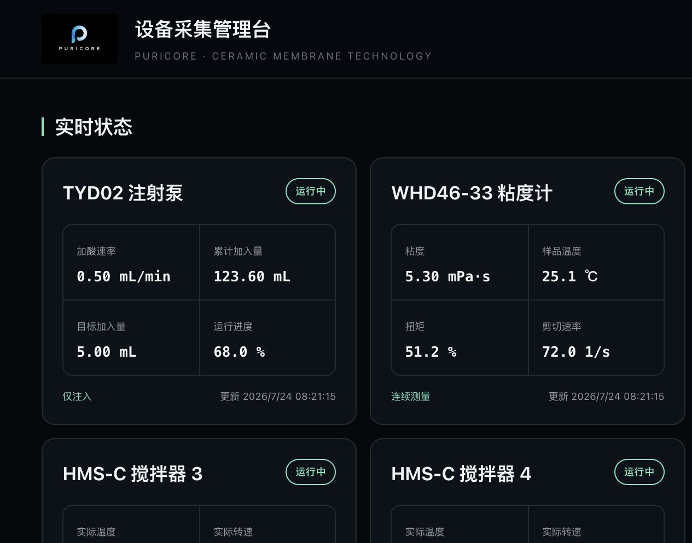
系统现在包含什么
8 台设备分类型显示在线状态和专属读数。
15 个步骤按顺序推进，平板负责打时间点。
设备读数、人工确认、异常与时间线归到同一批次。
批次、中间品、成品和存储位置都有独立标签。
两条线在同一个批次里汇合
实验员做实际操作；设备持续上传数据；点击步骤按钮只负责标明“这一段数据是什么用途”。
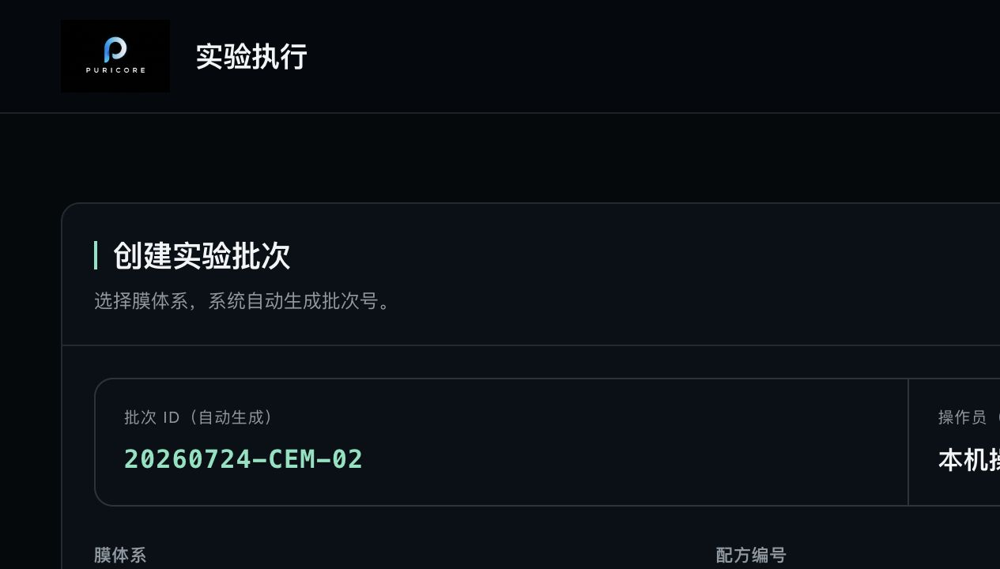
登录后自动确定操作员
进入系统后，批次中的操作员直接取当前登录账号。
每一步不再重新输入姓名，系统自动写入时间线。
当前流程允许操作员确认并锁定；需要复核时再配置独立账号。
批次号自动生成
规则：日期 + 膜体系 + 当日顺序号
20260724-CEM-02
系统按当天已有批次自动计算下一个编号。
SOP、目标粘度等低频项放在“高级参数”。
同一个批次号继续用于运行记录、标签和批记录。
15 个步骤按顺序推进
- 01环境与设备确认
- 02器皿干燥确认
- 03物料确认
- 04酸水配制
- 10TEOS / 功能硅烷预混
- 20加入乙醇搅拌
- 30冰浴与注射泵准备
- 31注射泵加酸水
- 32加完后平衡
- 40冷凝回流与升温
- 5040℃恒温陈化
- 60停止加热并降温
- 70过滤、出料与转序
- 80完成实验并锁定
- 90实验记录已完成
编号按工艺阶段留有间隔，后续可在 10、20、30 等阶段之间插入步骤，不需要整体改号。
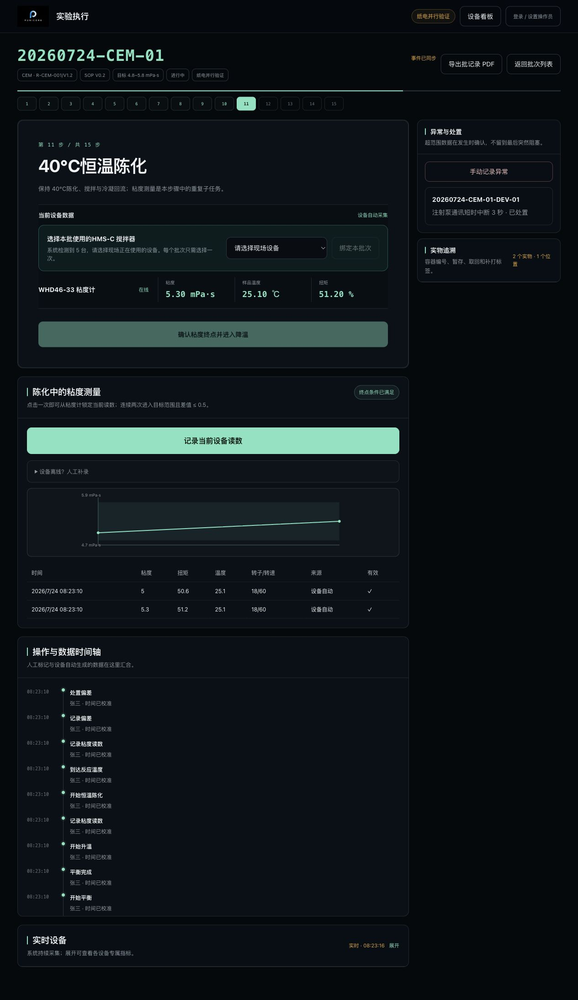
环境与设备确认
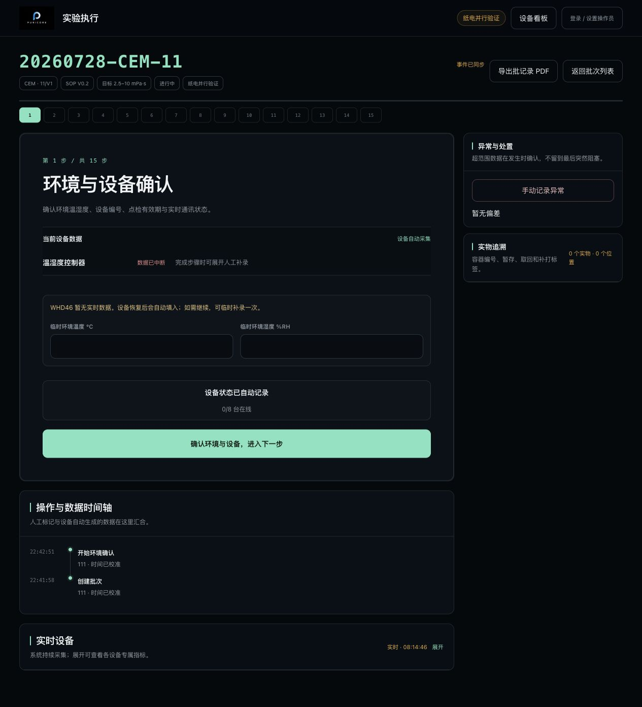
在线时自动带入环境温度、湿度和设备时间。
哪些设备在线、哪些设备离线，在开始实验前直接看清。
人工值会明确标注来源，不会和设备自动值混在一起。
器皿与物料确认
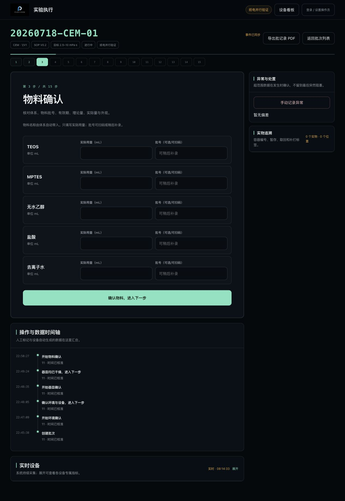
不要求操作员输入一串器皿名，减少现场打字。
操作员只补实际量；批号可选填，也可接扫码枪。
提示使用中文字段名，不再显示 “Actual value is required”。
酸水配制、预混、加入乙醇
“体系外观”是什么
用于记录溶胶是否澄清、浑浊、分层或出现沉淀。这类信息设备无法直接判断，保留为短选项或异常时填写。
冰浴、注射泵加酸、平衡
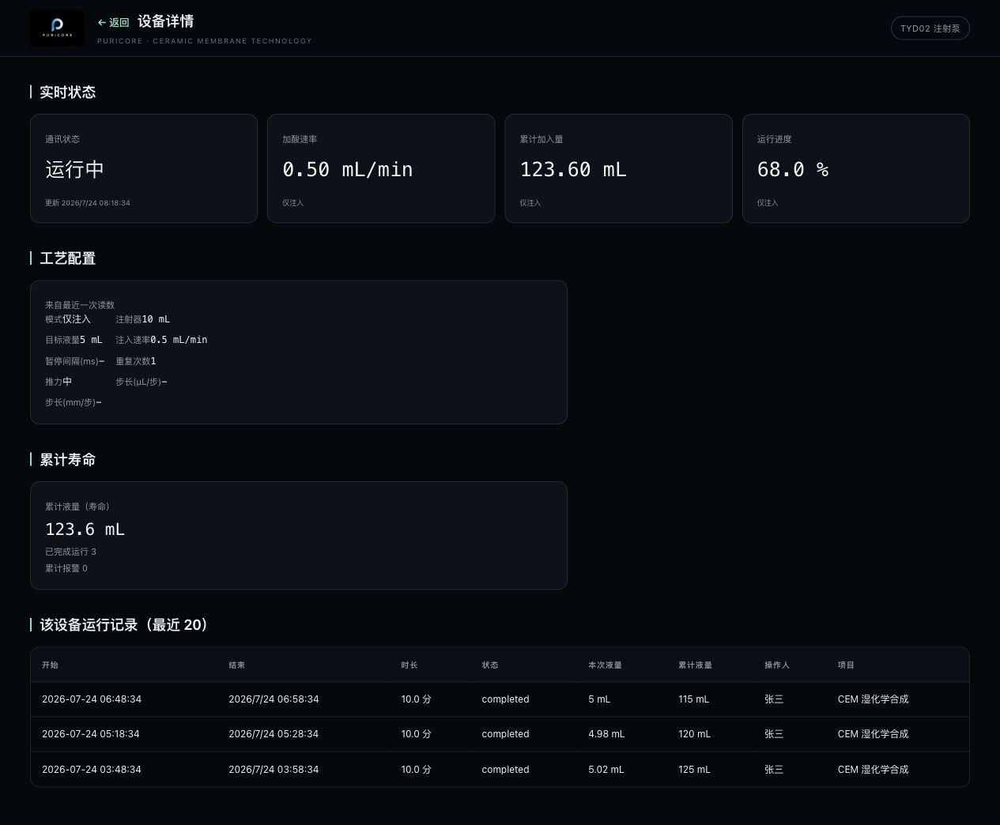
锁定开始时间和注射泵累计量 A。
锁定结束累计量 B，自动计算本次加入量 B − A。
系统判断是否达到规定时长；超范围时立即提示。
升温、到达 40℃、恒温陈化
后续温度曲线按批次保存，不只保留一个温度值。
开始时刻来自人工确认，温度来自 HMS-C。
每次点击从粘度计锁定读数，系统判断是否连续两次进入目标范围。
截图中两次粘度读数均标记为“设备自动”，终点条件已经满足。
降温、过滤出料、锁定记录
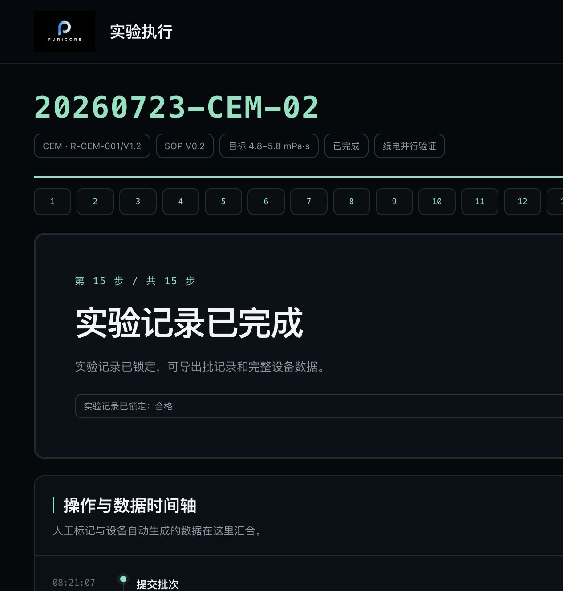
记录停止加热与到室温的时间，系统计算降温时长。
保留过滤规格、容器重量、转序粘度和标签确认。
只检查未处置异常和必需结果；问题在发生步骤就已经提示。
步骤结果、设备来源、趋势和审计时间线进入同一份 PDF。
每类设备显示自己的指标
在线 / 离线一眼可见
当前部署没有接实物设备时会显示“离线”；接线和通讯参数正确后转为“运行中”。
5 台搅拌器独立显示
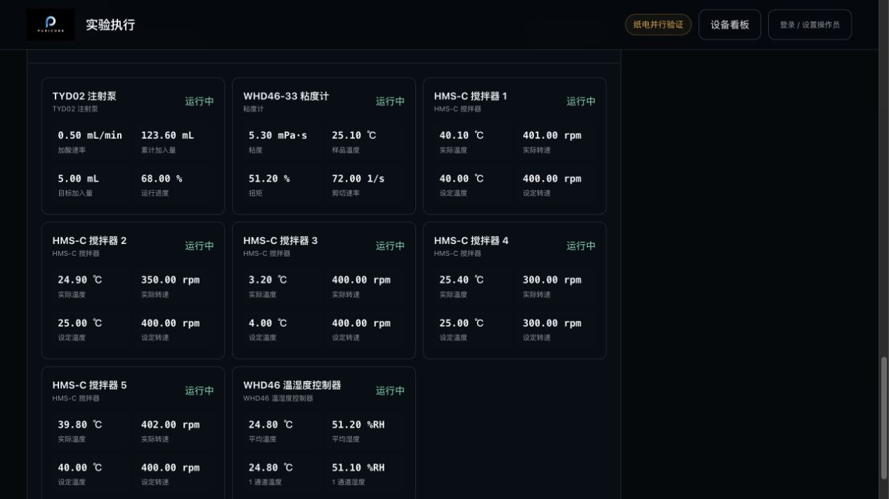
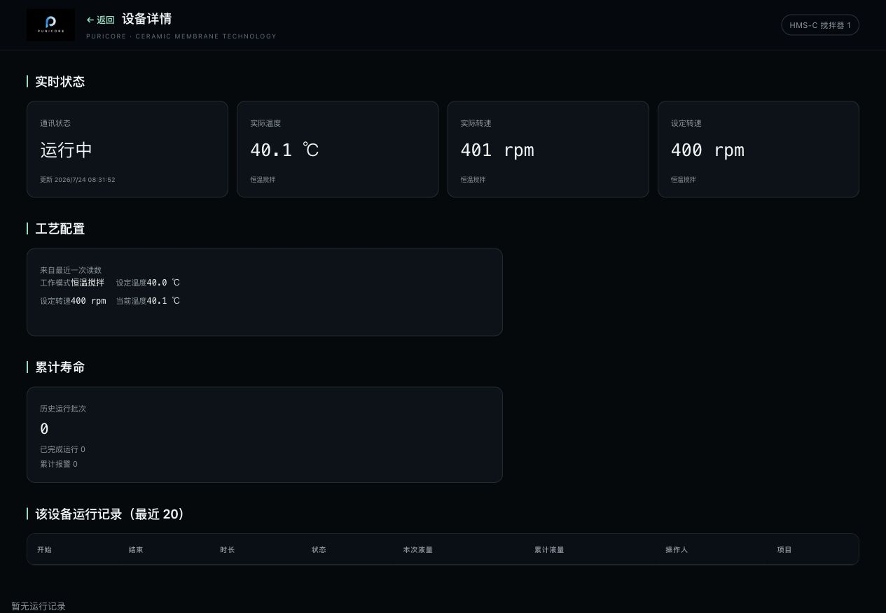
温度、转速、设定值和在线状态不会互相覆盖。
系统检测到 5 台时，操作员只需选择本批实际使用的那一台。
自动记录加酸过程
开始、结束、持续时间、完成状态和实际液量都有记录。
批次结果可追溯到对应运行曲线与设备事件。
连续测量直到达到终点
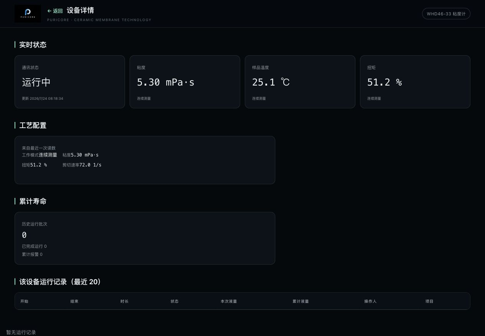
粘度、扭矩、样品温度、转子和转速一并保存。
连续两次进入目标范围且差值 ≤ 0.5 mPa·s，才允许进入降温。
三路温湿度采集
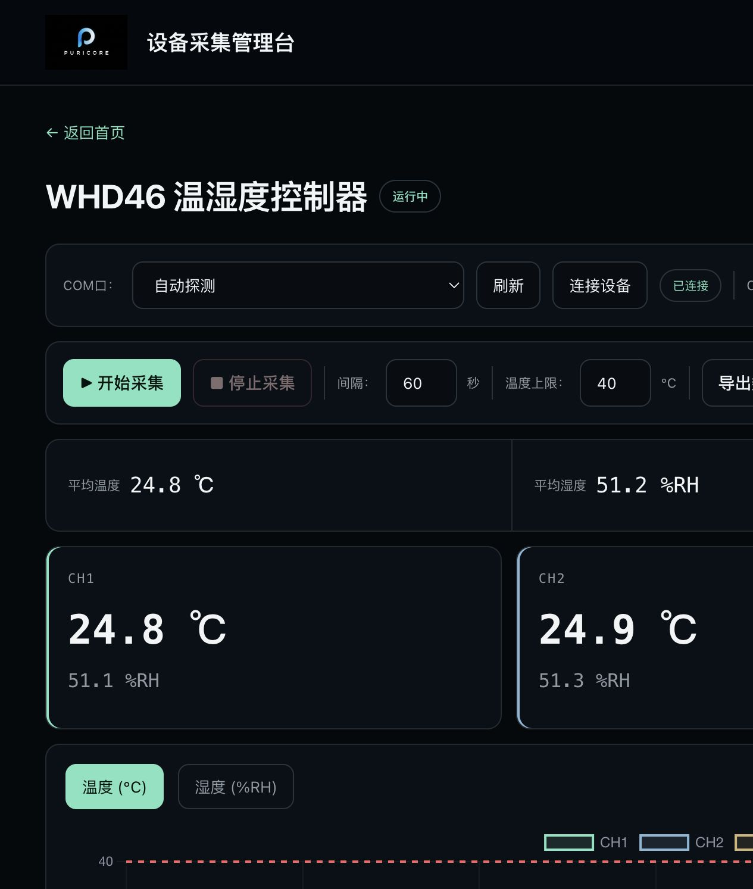
WHD46 已和泵、搅拌器、粘度计一样，拥有独立采集与页面模块。
CH1、CH2、CH3 各自记录温度和湿度，并提供平均值。
支持温度/湿度曲线切换和单设备数据导出。
点击打标后，系统从设备数据中取值
人工输入不是默认路线
在线设备优先；设备离线或读数过期时，系统才展开人工补录，并保留“人工补录”来源。
运行记录、曲线与导出
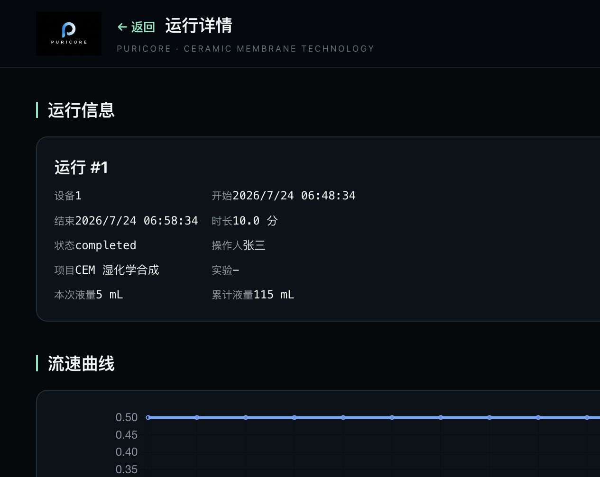
设备、开始/结束、时长、状态、操作员、项目和实际液量。
运行过程中的流速样本和开始、结束、报警事件按时间展示。
运行列表支持 CSV、Excel；单次运行和实验批次支持 PDF。
异常当场处理，原始数据不修改
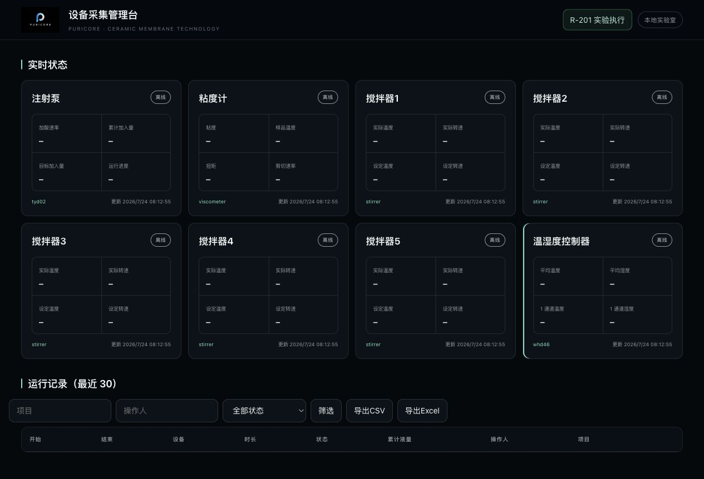
先确认数据是否正确，再决定继续、返工或终止。
保留异常描述、措施、影响评估和处理人；原始数据不回写。
不会到第 80 步才突然发现前面有普通填写错误。
批次、中间品、成品和存储位置
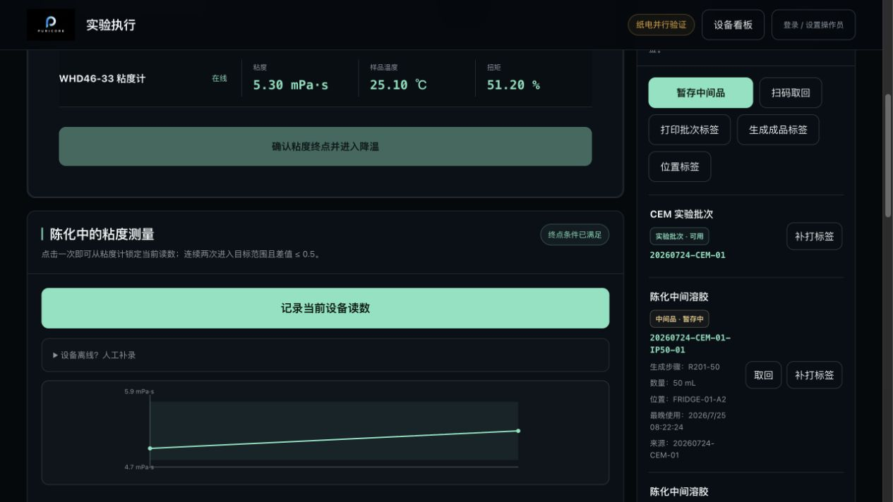
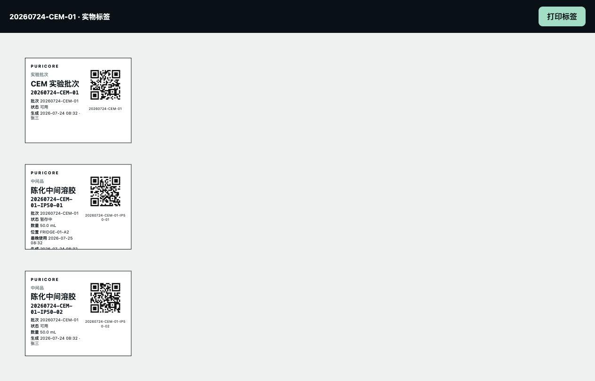
例如 20260724-CEM-01-IP50-01，能看出批次、生成步骤和容器序号。
记录冰箱位置、保存条件、最晚使用时间和操作人。
字迹不再依赖马克笔；补打原因和次数留痕。
自动生成电子批记录
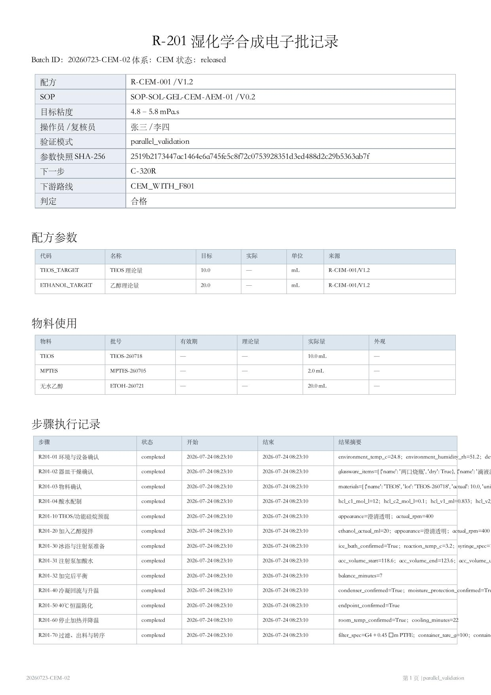
配方、SOP、目标粘度、操作员、路线与最终判定。
每一步的开始、结束、结果和数据来源进入同一份记录。
温度、粘度、异常、设备绑定和时间线继续排在后续页。
当前仍处于纸电并行验证阶段，正式放行以受控纸质签名流程为准。
当前边界与接下来要做的事
| 事项 | 当前情况 | 下一步 |
|---|---|---|
| 设备通讯 | 代码与页面已就位 | 现场核对接口、电平、线序、波特率、校验位和地址 |
| 设备控制 | 当前只读采集 | 先稳定采集与追溯，再评估是否需要反向控制 |
| 5 台搅拌器 | 软件已按 5 台显示 | 确认每台独立端口，或增加一条总线多从机支持 |
| 标签打印 | 标签与二维码已生成 | 选择标签机、纸张规格并做现场打印测试 |
| 纸电并行 | 电子记录用于验证 | 跑真实批次，对照纸表核验数据完整性 |
周会上建议直接演示 5 个动作
登录 → 创建批次 → 打开设备看板 → 进入第 50 步查看设备自动粘度 → 打开中间品标签与电子批记录。